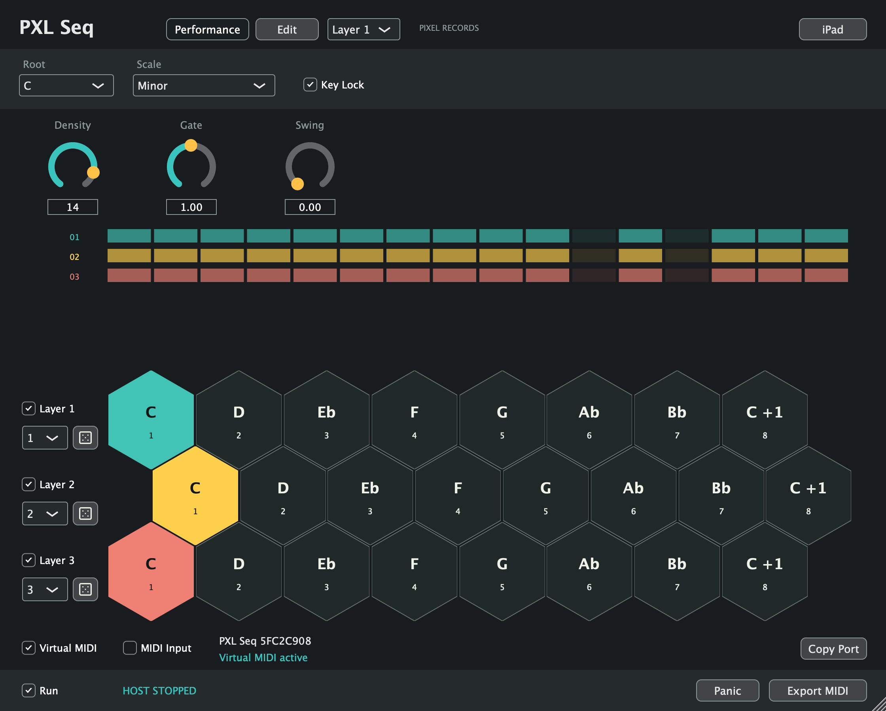
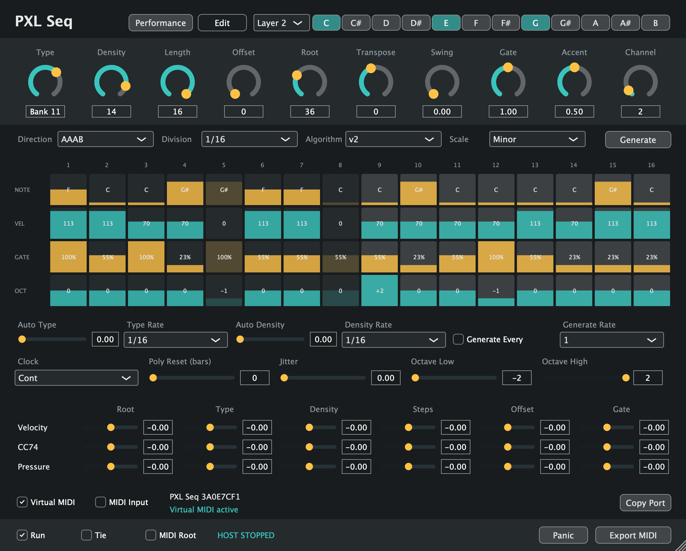
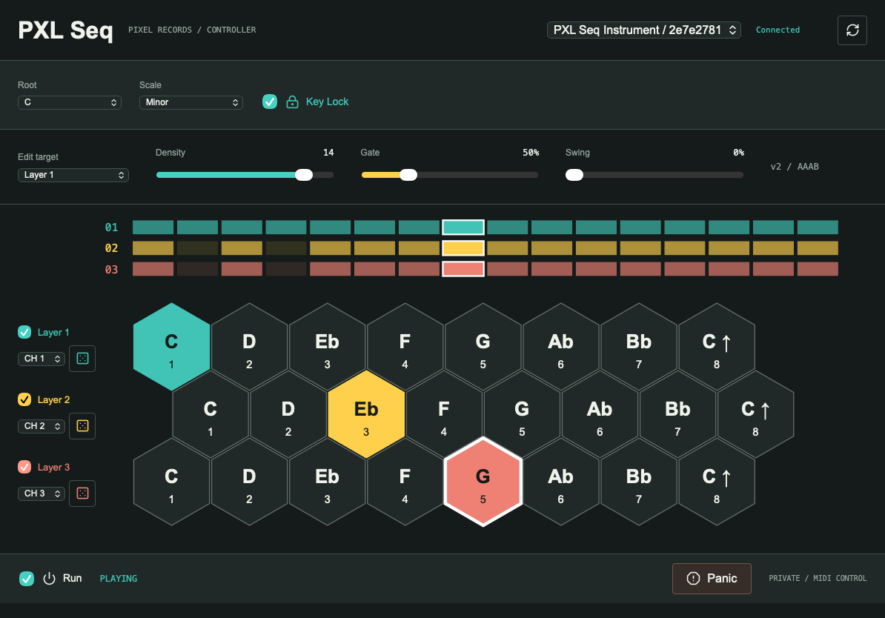

Four ways in.
v1, v2, Arp and Bass generators. Sixteen stored banks, a selectable chord and editable note, velocity, gate and octave lanes.
A little repetition.
A different ending.
Private beta. Public download is not available yet.
Release statusSilent phrase preview. This illustration shows the AAAB structure; it does not generate audio.
Generate a phrase. Find its character. Let it move. PXL Seq turns sixteen steps into evolving MIDI for your synths, samplers and hardware.



v1, v2, Arp and Bass generators. Sixteen stored banks, a selectable chord and editable note, velocity, gate and octave lanes.
Swing, ties, jitter and polyrhythmic resets. Modulate the pattern with velocity, CC74 and pressure, or let Type and Density wander.
Send MIDI to software or hardware. The AU instrument adds a dedicated virtual MIDI port for Ableton Live. Export a phrase as a MIDI file.
With sixteen steps, the first eight play three times. The last eight play once. A 32-step phrase, with a turn at the end.
Forward and Backward modes are there too. AAAB never reverses the notes.
Keep MIDI Input off unless using a physical controller. Avoid All Ins on the source track: its own port must not loop back in.
Apple Silicon · macOS 12+
MIDI generator, not a synthesizer. No Max required.
PXL Seq 0.5.0 is in private beta.
Public downloads are pending distribution clearance.
The current build is ad-hoc signed and not notarized.